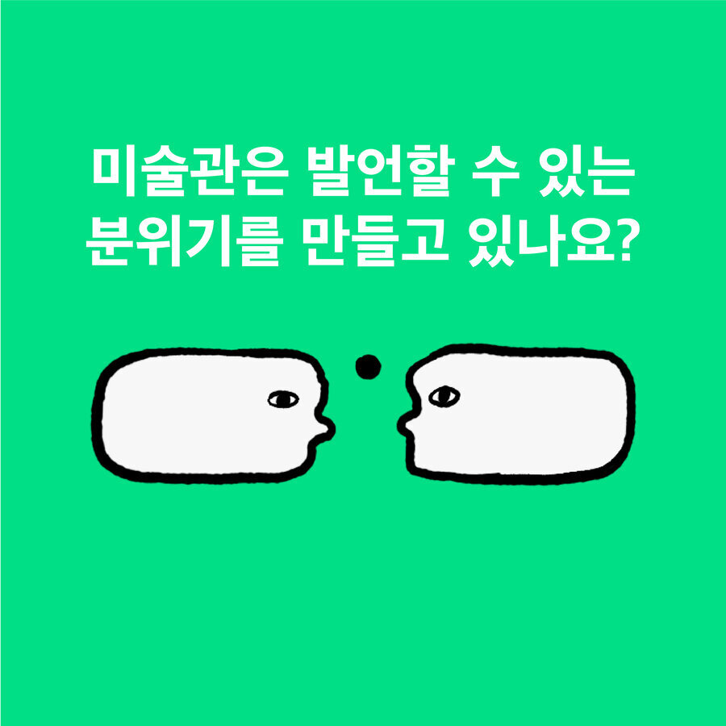
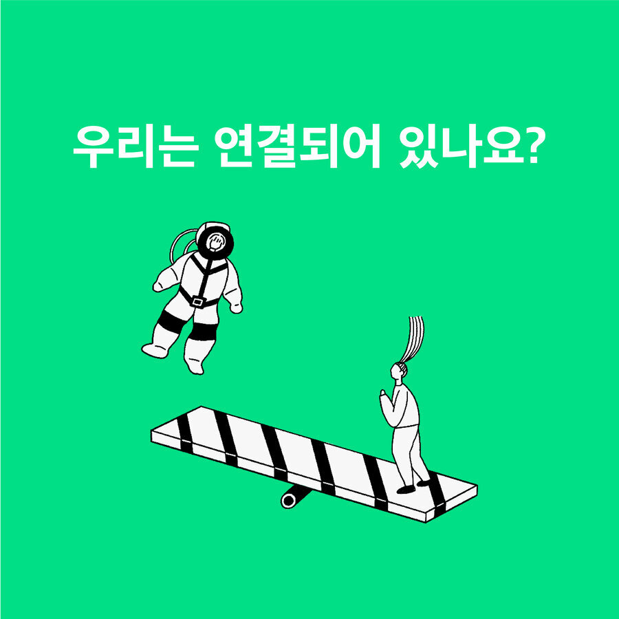
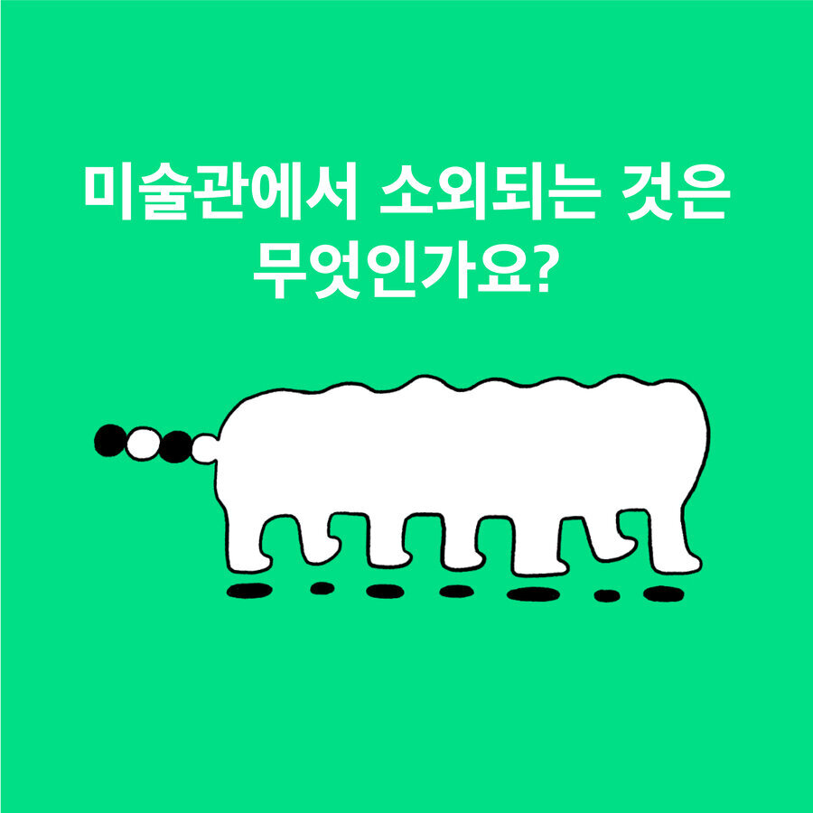
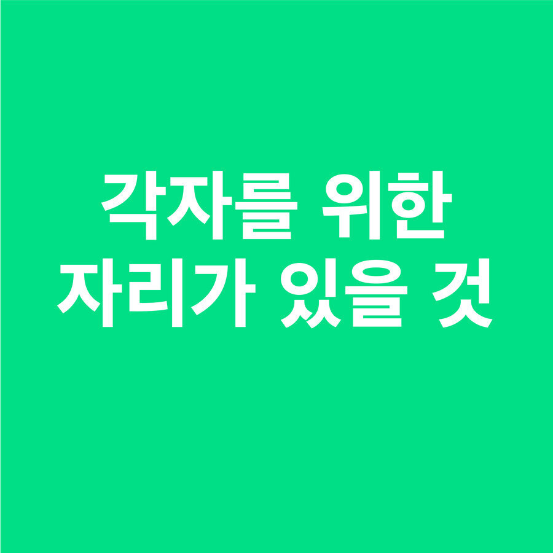
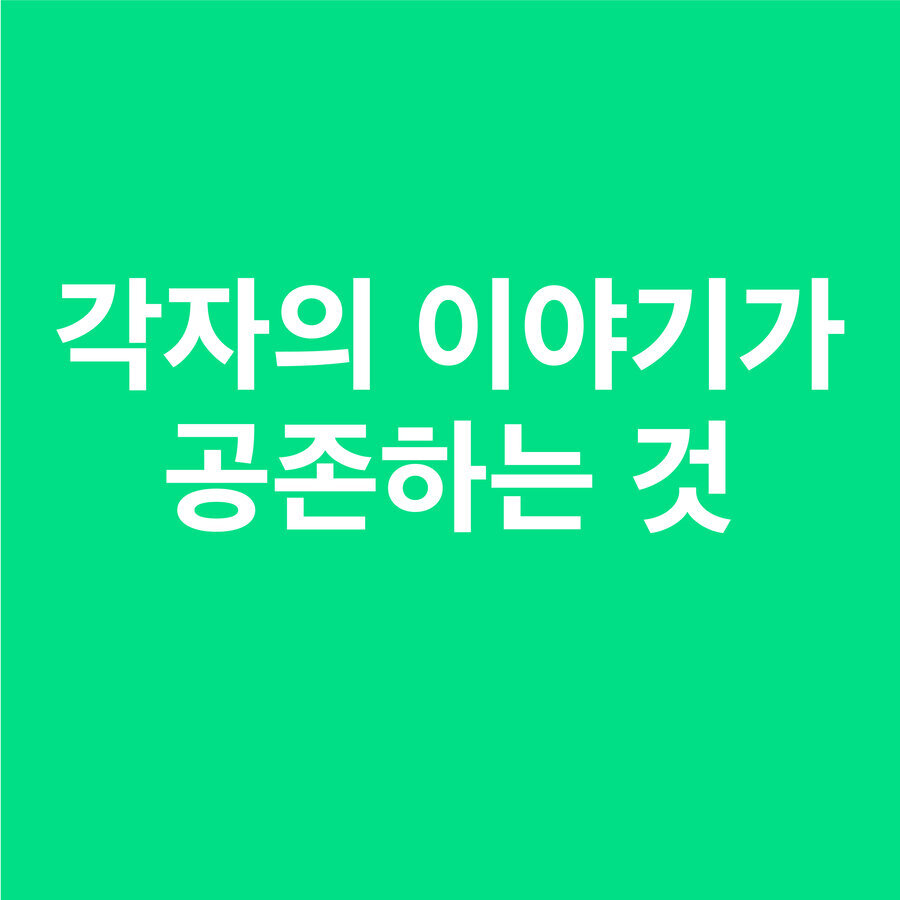
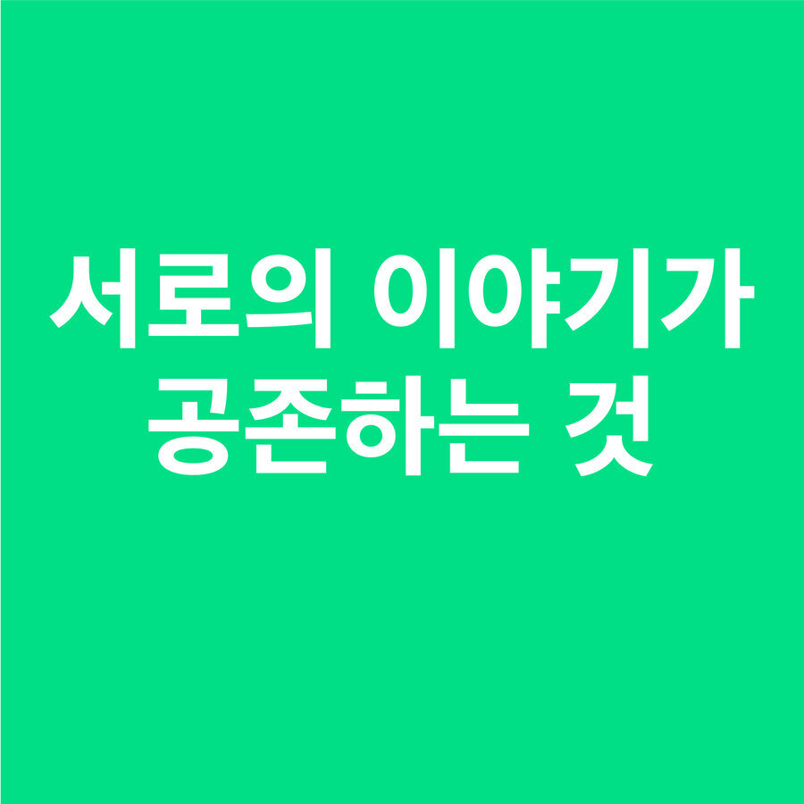
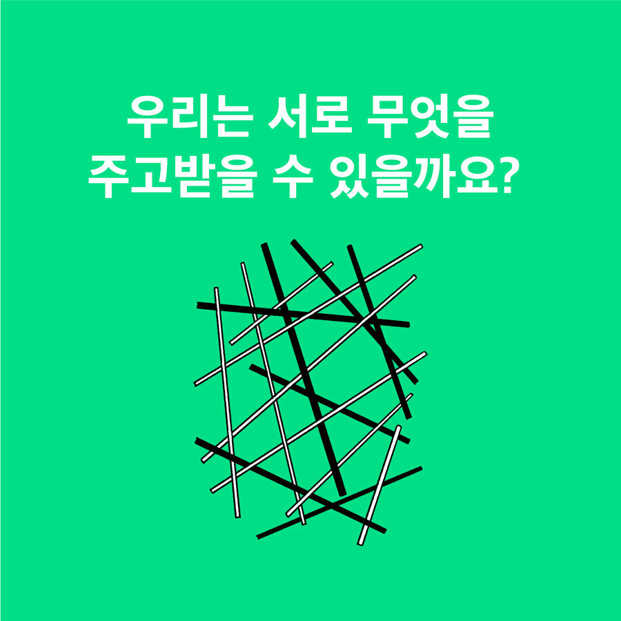

여러분들은 미술관하고 일반 대중들을 연결해주는 아주 중요한 역할을 하고 계시잖아요
언제 미술을 좋아하게 되었는지.첫 순간에 대해서 나누는 중이였는데 선생님은 혹시 언제가?
각자의 맥락에 맞게 도슨트가 되어가는거에요.
제 이야기도 하지만 다른 캐릭터가 되서 질문을 던져보라는거죠?
봐도 봐도 도통 아무것도 모르겠는데 작가들은 알고 그린 거예요? 라고 질문할 수도있죠.
이 작품이 중요한지? 왜 걸려있어야 하는지
어디까지 미술관에서 시끄럽게 떠들 수 있는지?
퍼포먼스를 하는 경우 일시적인 것으로 끝나버리는 것에서 허무하거나 공허하지 않을까
작가 입장에서 말씀드리자면 기금을 지원해서 받아서 하는 경우가 있고
미술관 자체에서 비용을 주겠다는 방식이 있습니다.
대부분 큐레이터가 기획의도를 작성을 하는것같던데,
큐레이터가 알고 작성을 한 것인지 작가의 설명을 바탕으로 짜깁기를 한 것인지 이해를 하고 썼을까?
오히려 기획자가 다른 면을 발견해주고
새로운 방법으로 가는 경우가 있기 때문에...
작가는 그런 생각을 전혀 안 했는데 끼워 맞추는 것이 아닌가요?
그걸 의도하는 것이 아닐 수도있는데.
뒤늦게 입시를 시작하게 돼서 생각보다 그림이 좋더라고요.
그 많은 사람들이 같이 있다고 생각하고 감동을 받고 하는 것에
나는 전혀 공감하지 못한다는 것에 답답하다는 생각이 들었고.
그러면 공부를 좀 시작해볼까 하고 책을 조금씩 읽고 강의를 듣고 했어요.
저는 생각해보면 미친 듯이 어떤 순간이 좋았다기보다는
어렸을 때부터 미술관에서 시간을 보내는 일이 많았어요.
가족들과 많이 다녔고, 그런 경험이 저에게는 편안하고 즐거운 경험이었어요.
저는 어렸을 때부터 부모님이 다 일을 하셔서 집에 있는 시간이 많았어요.
그러다 보니까 제 주위를 예쁘게 꾸미는 것에 관심이 많았고,
초등학교 때도 미술활동을 많이 해서 상도 많이 받았고요.
미술에 관심을 갖게 된 것은 너무 몰라서, 답답해서인데,
저는 미술관에서 작품을 보는 것이 저에게는 노동이더라고요.
5-6살때 부터 그림을 그렸으니까 그런 문화도 저에게는 편했고
내가 관심가지는 미술이 있는곳이고 항상 가던 곳이고 그러니까 남들과도 함께 가고 싶고…
미술관에서 마음이 편해지고 정화가 되요.
저는 글로만 역사적인 메시지나 내용을 담을 수 있다고 생각했는데
피카소의 <게르니카> 작품 안에 모든 역사가 담겨 있는 거예요.
그때 큰 충격을 받아서 그때부터 예술작품도 공부해야겠다
관심이 생겼고 도슨트로 활동하게 되었어요
생각해보면 부모님이 맞벌이다 보니까
혼자서 그림을 그리면서 노는 경우가 많았던 것 같아요.
좋아하기도 하고 미술관도 많이 다녔는데 입시를 하게 되면서
뭔가 빠져나갈 수 없는 길에 들어서게 되었어요
중학교 때는 박수근 작가의 따님인 박인숙 선생님이 저희 미술선생님이셨어요.
그래서 동경? 같은 것이 생겼고요.
미술관에서 무언가를 하면 보호받는 느낌이지만, 미술관을 벗어나면 다르게 여겨져요.
관람객이 무엇을 경험할지 그리고 뭘 공유하게될지, 미술관 밖에서요.
버스킹도 쓱 보고 지나가고.
예술이 맞는 자리가 있고 맞지 않는 자리가 있을까? 생각을 하게 되네요.
분위기는 만들어진다고 생각해요
다양한 질문이랄까요? 어떤 사람도 어떤 부분에서는 전문가인 거잖아요.
그런 식견을 가지고 다양한 시선을 알려주시면 좋을 것 같아요.
미술관에서 나는 어떤 의미일까?
사람들이 작품을 봤을 때 사고의 전환을 얻으면 좋겠다고 생각해요






